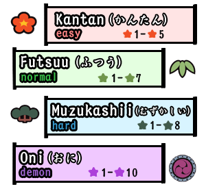

太鼓の達人 (Taiko No Tatsujin) is a rhythm game developed by Bandai Namco originally designed for arcade machines.
It revolves around hitting red ドン (Don) and blue カツ (Katsu) notes as they move across the hit zone (timed to the beat of the music)
with keybinds that you can set up in the settings menu.
Additionally, these notes have large variants that require both of their respective buttons to be pressed for double points.
Beyond this, there are two special kinds of notes: drumroll and ballon notes. Drumroll notes just require you to hit as many
notes as possible while ballon notes require you to hit a specific amount ドン (Don) notes under a time limit. Special notes do not impact combo or your 魂 (Soul) guage.
Your goal is to fill up the 魂 (Soul) guage to at least 75% before the end of the song, with each successfully hit note
increasing the gauge, while decreasing the gauge upon missed or poorly timed notes. On top of this, you are also
attempting to reach the highest score possible.
The score amount gained from hit notes are tied to their timing, with better-timed hits awarding more 魂 (Soul) and points.
良 (Good) awards full points, 可 (Ok) awards half points, and 下可 (Bad) awards no points plus resets your combo.
Additionally, score gained is given a bonus upon reaching specific combo milestones (maxing out at 100 combo) and
during kiai times (usually the chorus or intense part of a song).
The difficulty is on a per-map basis and often quantifying a difficulty to just a value is a bit difficult. As a result, 太鼓の達人
has its own system for naming difficulties. These difficulty names don't necessarily mean a map is harder than another, but
it's just more of an indication of what you might expect to find in terms of note density, patterns, and skillsets expected.
However, if you are new to 太鼓の達人 use the below guide for a general difficulty reference. Due note that difficulties that don't
follow the pattern below are generally very difficult (as in, above 鬼 (Oni) うら鬼 (Inner Oni)).

In order to upload new beatmaps, you will need an osu! account.
After fufilling the above, click on Beatmaps in the navigation
bar and use the the search bar provided to look up user generated beatmaps.
Note, make sure to set the "Mode" to osu!taiko as converted maps from
other gamemodes are not supported and likely won't be functional.